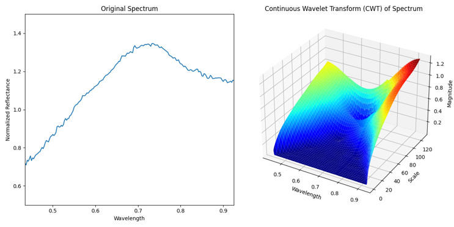

Purpose
An AI-powered online tool to classify asteroids and find their composition. Designed to forward the field of asteroid mining to move away from current harmful mining practices on Earth.
An AI-powered online tool to classify asteroids and find their composition. Designed to forward the field of asteroid mining to move away from current harmful mining practices on Earth.
Uses the following data from each asteroid as input:
Conducts a wavelet transform of each spectrum to better analyze the data.
Easily expandable to new asteroid data.